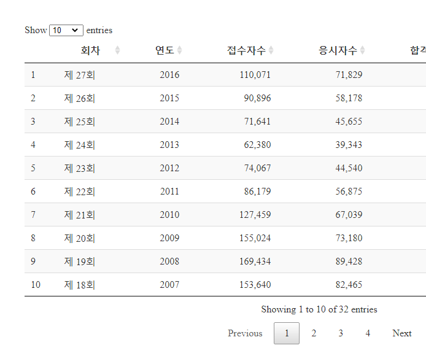
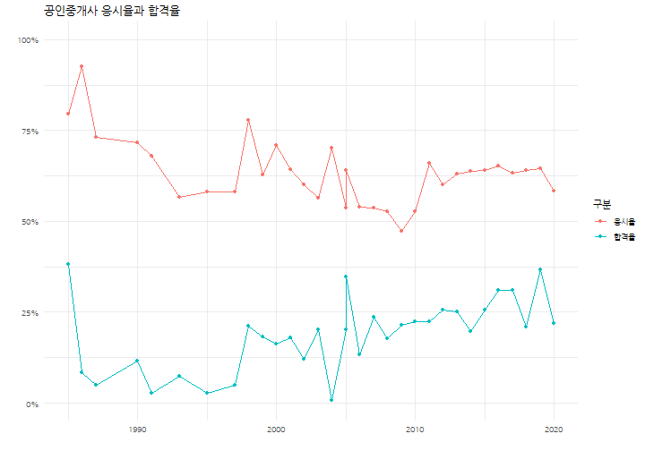
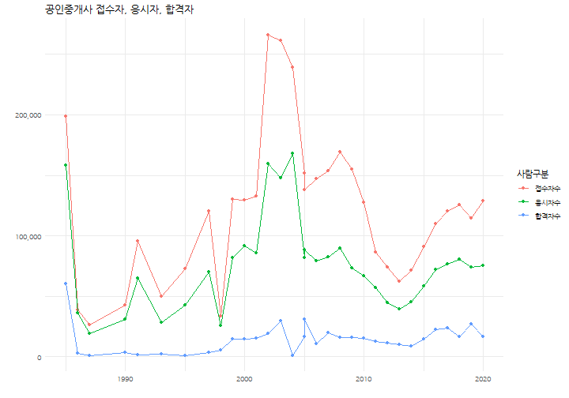

xwMOOC 데이터 제품
시험공화국 - 수험생
수험생 데이터
library(tidyverse)
library(rvest)
land_url <- "http://www.ebs.co.kr/land/examInfo/pass"
Sys.setlocale("LC_ALL", "C")[1] "C"land_dat <- land_url %>%
read_html() %>%
html_nodes(xpath='//*[@id="tab01"]/table') %>%
html_table() %>%
.[[1]] %>%
tbl_df
Sys.setlocale("LC_ALL", "Korean")[1] "LC_COLLATE=Korean_Korea.949;LC_CTYPE=Korean_Korea.949;LC_MONETARY=Korean_Korea.949;LC_NUMERIC=C;LC_TIME=Korean_Korea.949"land_df <- land_dat %>%
filter(!str_detect(`회차`, "1차")) %>%
mutate(`접수자수` = parse_number(`접수자수`),
`응시자수` = parse_number(`응시자수`),
`합격자수` = parse_number(`합격자수`),
`시행년도` = as.Date(`시행년도`, "%Y년 %m월 %d일")) %>%
mutate(`회차` = str_extract(`회차`, "제 [0-9]+회"),
`연도` = lubridate::year(`시행년도`)) %>%
group_by(`회차`, `연도`) %>%
summarise(`접수자수` = sum(`접수자수`),
`응시자수` = sum(`응시자수`),
`합격자수` = sum(`합격자수`)) %>%
ungroup() %>%
mutate(`회차` = factor(`회차`, levels = paste0("제 ", seq(1,27), "회"))) %>%
mutate(`응시율` = `응시자수`/ `접수자수`,
`합격율` = `합격자수`/`응시자수`) %>%
arrange(desc(`회차`))
land_df %>%
DT::datatable() %>%
DT::formatRound(c("접수자수", "응시자수"), digits=0) %>%
DT::formatPercentage(c("응시율", "합격율"), digits=1)
library(extrafont)
loadfonts()
land_df %>%
select(`연도`, `응시율`, `합격율`) %>%
gather(`구분`, `비율`, -`연도`) %>%
ggplot(aes(x=`연도`, y=`비율`, color=`구분`)) +
geom_point() +
geom_line() +
theme_minimal(base_family = "NanumGothic") +
scale_y_continuous(labels = scales::percent, limits=c(0,1)) +
labs(x="", y="", title="공인중개사 응시율과 합격율")
land_df %>%
select(`연도`, `접수자수`, `응시자수`, `합격자수`) %>%
gather(`구분`, `사람수`, -`연도`) %>%
mutate(`구분` = factor(`구분`, levels = c("접수자수", "응시자수", "합격자수"))) %>%
ggplot(aes(x=`연도`, y=`사람수`, color=`구분`)) +
geom_point() +
geom_line() +
theme_minimal(base_family = "NanumGothic") +
scale_y_continuous(labels = scales::comma) +
labs(x="", y="", title="공인중개사 접수자, 응시자, 합격자",
color="사람구분")